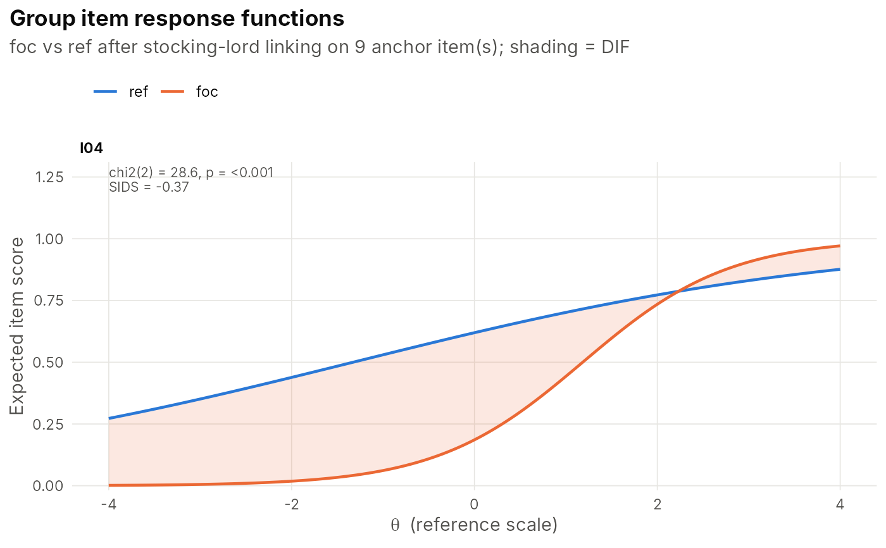

Calibrates the items separately in each group, places every focal group on the reference group's scale by characteristic-curve linking on anchor items, and then compares the item parameters with Lord's Wald chi-square test and the item response functions with Raju's area measures and signed/unsigned expected-score differences weighted by the focal group's trait distribution (SIDS/UIDS). Works for dichotomous and polytomous items and for any number of groups. Anchors can be purified iteratively.
Usage
dif_irt(
data,
group,
model = "2pl",
reference = NULL,
anchors = NULL,
purify = TRUE,
alpha = 0.05,
link_method = "stocking-lord",
p.adjust = "BH"
)Arguments
- data
A response matrix/data frame, or an `irtfit` (its data and item models are reused).
- group
A vector of group memberships, one per person.
- model
Item model(s) when `data` is not a fitted model.
- reference
Reference group (defaults to the first level).
- anchors
Names of anchor items assumed DIF-free. When `NULL`, all items start as anchors and, with `purify = TRUE`, flagged items are removed and the linking repeated until the anchor set is stable.
- purify
Iteratively purify the anchor set.
- alpha
Significance level used for flagging and purification.
- link_method
Linking method passed to [irt_link()].
- p.adjust
Multiple-comparison adjustment.
Value
A data frame of class `irt_dif_irt`, one row per item and focal group, with Lord's chi-square (`chisq`, `df`, `p`, `p_adj`), the mean difficulty difference (`delta_b`, focal minus reference; positive means harder for the focal group), Raju's signed and unsigned areas, SIDS and UIDS (expected item score differences, focal minus reference, in score points), and a `flag`. The differential test functioning (expected total score difference) is in `attr(, "DTF")`.
Examples
# \donttest{
set.seed(3)
d <- sim_irt(1000, 10, "2pl")
g <- rep(c("ref", "foc"), 500)
th <- attr(d, "truth")$theta[, 1]
d$I04[g == "foc"] <- rbinom(500, 1, plogis(1.2 * (th[g == "foc"] - 1)))
res <- dif_irt(d, g, model = "2pl", reference = "ref")
res
#> IRT-based DIF (Lord's Wald test, Raju areas) | reference group: ref
#> foc: 9 anchor(s); theta_ref = 0.957 * theta_foc + 0.047; DTF = -0.379 score points
#> 1 item(s) flagged
#>
#> item focal chisq df p p_adj delta_b signed_area unsigned_area sids
#> I01 foc 1.963 2 0.375 0.799 0.073 0.063 0.447 0.021
#> I02 foc 1.121 2 0.571 0.811 0.059 0.049 0.429 0.008
#> I03 foc 1.471 2 0.479 0.799 0.077 0.062 0.384 0.022
#> I04 foc 28.578 2 0.000 0.000 2.512 2.239 2.807 -0.374
#> I05 foc 1.661 2 0.436 0.799 0.368 0.360 0.400 -0.031
#> I06 foc 0.228 2 0.892 0.892 -0.092 -0.048 0.180 -0.011
#> I07 foc 2.797 2 0.247 0.799 -0.117 -0.115 0.595 0.024
#> I08 foc 4.633 2 0.099 0.493 -0.034 -0.032 0.536 -0.024
#> I09 foc 0.762 2 0.683 0.811 0.164 0.161 0.161 -0.028
#> I10 foc 0.629 2 0.730 0.811 0.217 0.154 0.404 0.013
#> uids anchor flag
#> 0.043 TRUE FALSE
#> 0.034 TRUE FALSE
#> 0.035 TRUE FALSE
#> 0.375 FALSE TRUE
#> 0.034 TRUE FALSE
#> 0.012 TRUE FALSE
#> 0.056 TRUE FALSE
#> 0.079 TRUE FALSE
#> 0.028 TRUE FALSE
#> 0.022 TRUE FALSE
plot_dif_curves(res)

# }